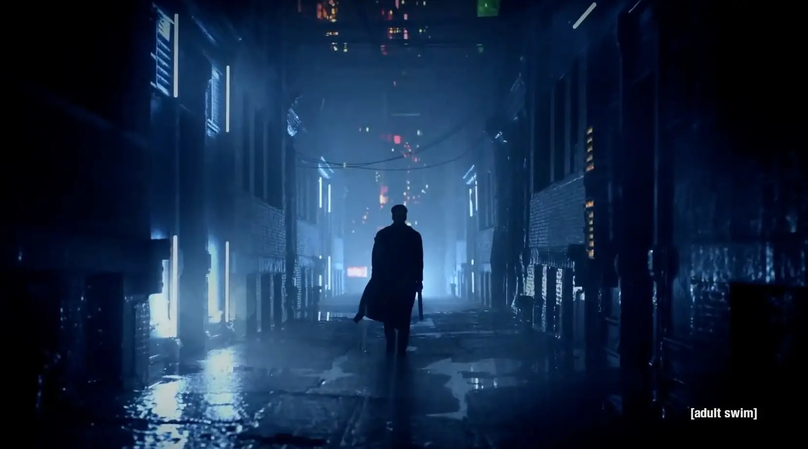

银翼杀手

概况
导演: 雷德利·斯科特
编剧: 菲利普·K·迪克 / Hampton Fancher
主演: 哈里森·福特 / 肖恩·杨 / 鲁特格尔·哈尔 / 达丽尔·汉纳 / 更多...
类型: 科幻 / 冒险 / 惊悚
制片国家/地区: 美国
语言: 英语
上映日期: 1982-06-25
片长: 117分钟
剧情简介
故事讲述了2019年，洛杉矶变成乌烟障气的九反之地。
人类制造了与真人无异的复制人为人类工作，但当这些复制人有了思想感情时就要将他们毁灭。
人造人虽然生性残暴，却对自己只拥有的四年的生命充满着渴望和留恋。人类不允许这些复制品拥有做正常人的权利，
所以必须毁灭这些被定罪为“妄图成为人类”的生命。戴克便是一个专门追杀变节复制人的杀手，
肩负追杀叛逆的人造人的重任，
但是当他与美丽的复制人瑞秋相遇时，两人之间发生了感情，他开始左右为难。
回到上一页